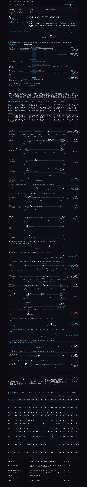
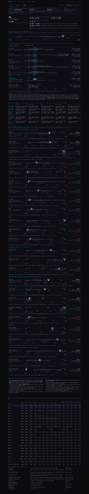
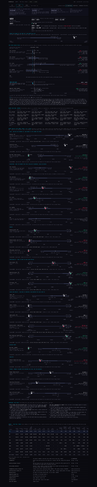
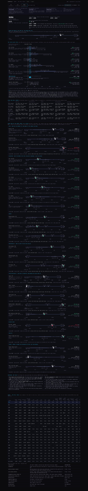




Round 2 drew five valuation bars. You said: why so narrow, we have all the financials on the Hub; label it like an Excel chart so I can see how you get to $1,565–$1,959; show me the outliers that move the medians; and the analyst targets are a simple thing to add to the allocation tool. This round does those four things. The page is index.html (tabs for MU, GEV, NVDA, or any ticker).
| MU · semiconductors, 21 peers | GEV · AI powertrain, 7 peers | NVDA · semiconductors, 21 peers | |
|---|---|---|---|
| price (25 Sep, chart API) | $1,085 | $957 | $225 |
| market value · place in the set | $1.11T · 4th of 22 | $315B · 1st of 8, beyond the largest peer (BE $94.7B) | $4.81T · 2nd of 22 |
| comps fair value (middle half, outliers in) | $1,565 – $1,946 · 4 of 5 rows | $833 – $872 · 4 of 4 rows | $255 – $309 · 4 of 5 rows |
| the row outside the band | P/E forward, entirely above (peers' median 33.4x on MU's $158 FY27 EPS → $5,282) | PEG cannot price GEV: EPS is not expected to grow | PEG, entirely above |
| price against the band | below, +62% to the middle | above, −11% to the middle | below, +25% to the middle |
| analysts' targets (price_target_consensus) | $1,100 – $2,200 · median $1,500 · +38% | $949 – $1,450 · median $1,298 · +36% | $270 – $515 · median $323 · +43% |
| analyst band against the comps band | they overlap | the whole analyst band is above the comps band | they overlap |
| rows on the favourable side of the peer median | 14 of 17 | 8 of 16 | 15 of 17 |
The outliers that move the ball, MU's set as an example. P/E adjusted: ALAB 151x, AMD 119x, ARM 164x, INTC 185x are outliers by the rule; the median with them is 57.1x, without them 49.9x. CapEx growth: AXTI +628% and CBRS +1533% set the high end; without them the band is −42% to +146%. FCF margin: AVGO +44% (high), AXTI, CBRS and SIMO (low). Revenue and enterprise value: NVDA and TSM. The OUT control recomputes every band, median and implied price without them; the row line always says what the band is without them, even when they are in.
| table | what it gives | date on this read |
|---|---|---|
| ticker_cohorts | the peers: every name that carries the cohort tag (SEMICONDUCTORS for MU and NVDA, AI_POWERTRAIN for GEV); the cap class from the size tags | as stored |
| chart API /quotes | today's price for every name (proxied through Node for the local proof; direct on the Hub) | 25 Sep (the last session; read on a Sunday) |
| fundamentals | market value and the price on the same row → shares; EPS TTM; revenue TTM; adjusted P/E (the round-1 column, stored as adjusted_pe) | 18 – 26 Sep |
| analyst_estimates (annual) | EPS and revenue this FY and next → forward P/E, PEG, growth next FY; the average target when no consensus row exists | 25 – 27 Sep |
| price_target_consensus | lowest, median, average, highest target and the analyst count → the analyst band and the target-over-price row | 26 – 27 Sep; the analyst count is empty for MU's row |
| fundamentals_history, cashflow_history | quarters → TTM revenue, gross profit, operating income, EBITDA, CapEx, FCF, and the year before | newest period 2 Aug |
| balance_history | net debt at the newest balance date → EV, net debt/EBITDA, the net-debt size row | newest 2 Aug |
| composite_staged tf=D | the Geiger, as the board reads it | 24 Aug on this read |
| ticker_heartbeat_daily | the usual day over 60 sessions | 17 – 25 Sep |
| earnings_events | the next report date → days to the report (MU reports in 3 days) | from 27 Sep |
The arithmetic that is not new (TTM from four consecutive quarters, EV = shares × price + net debt, the implied price at a multiple, the overlap band) is round 2's own file, imported unchanged: deliverables/20260927/comps-single/comps.mjs. The number helpers are round 1's: deliverables/20260925/knockout/field.mjs. What is new is in r3.mjs: the rows, who sets what, the outlier rule, the band edges explained, the analyst bar, the axes.
A bar. Take forward P/E. Line up every peer's multiple from lowest to highest. Multiply each by the company's own EPS estimate. The lowest peer's multiple gives the left end, the highest the right end, the median peer's the tick; the 25th and 75th percentiles (straight-line between the two nearest peers) bound the darker middle half. For EV rows the multiple is applied to revenue or EBITDA, net debt is taken off, and the rest is divided by the share count. For PEG: PEG × EPS growth (%) × EPS estimate.
The band. The stretch of price that the most bars cover at the same time, on their middle halves (or their whole low–high, on the control). Its left edge is the highest 25th-percentile price among the agreeing bars and its right edge the lowest 75th-percentile price — the page names both bars. When no two bars overlap the page says so and draws no band.
Outliers. Tukey's rule: a peer more than 1.5 × the middle half beyond the nearer edge of that middle half. This is a choice, not a fact, and the control row says so. With fewer than four peers nobody is called an outlier. Not-meaningful multiples (P/E over 100x and so on) are set aside before the rule runs, so a 3,296x P/E is NM, not an outlier. An outlier is always drawn (hollow diamond) and named; the OUT control drops it from every band, median and implied price.
The $ axis. A window from half the lowest of the price, the comps band and the analyst band to 2.5× the highest. A bar end beyond it is cut (‹ ›) and its number written at the edge. Without the window, one wild multiple (AXTI's 92x forward P/E on MU → $14,566) squashed every other bar into the left quarter — that was round 2's chart.
Price targets into the allocation tool. The analyst band gives one number per name: room to the median target, in %, dated, with the analyst count. Proposal for the tool's per-name sleeve, beside the condition read and the cap class: (1) a name priced above its highest target cannot enter a sleeve — greyed with the reason, like the earnings rule; (2) inside a sleeve, weight tilts by room to the median target, capped at ±25% of the sleeve's equal weight, so no single target swings the book; (3) the comps band is shown beside it and does not weight — two measures, two bars. The tool would read price_target_consensus exactly as this page does; nothing is stored.
This view, aggregated to a cohort. Run this read once per member with the same functions. The cohort's score on a row is how many members sit on the favourable side of the cohort median, named. The cohort's field is one row per member — its comps band, its analyst band, its price — on one $ axis indexed to price = 100, so the names line up and "picking between comps" is a glance. The outlier rule then names which members move the cohort medians. Cost: 22 reads of the same tables for semiconductors; no new data.







tests/comps-r3.test.mjs, 19 tests: every round-1 column and every round-2 component has a row; the new inputs are read (adjusted P/E, the target band with its fallback, Geiger, usual day, days to the report); who sets the ends and the median; Tukey's fences on a hand-worked set, and the too-few-peers case; NM before outliers; the outlier words; a price bar's ends in words ("12.5x (E) × EPS, last twelve months $5.00 = $62.50"); the band's edges and the rows outside it, on middle half and on low–high; outliers OUT changing the implied prices; the size position and the log axis; ticks, scales, number words, verdicts, cohorts; and the page and this write-up carry what they must and no key. Baseline at e39694d: 998 tests, 991 pass, 5 fail (the two the common brief names — "every place this surface prints an age uses the one function" and xfeed-publish — plus three others already failing on this SHA: the Indicator Lab checkpoint, "saved review charts are direct", "readiness does not turn a source candidate"). With this branch: the same 5 fail, 19 more pass.